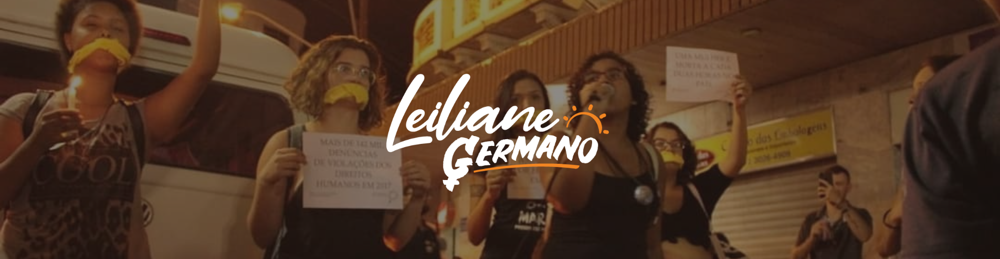
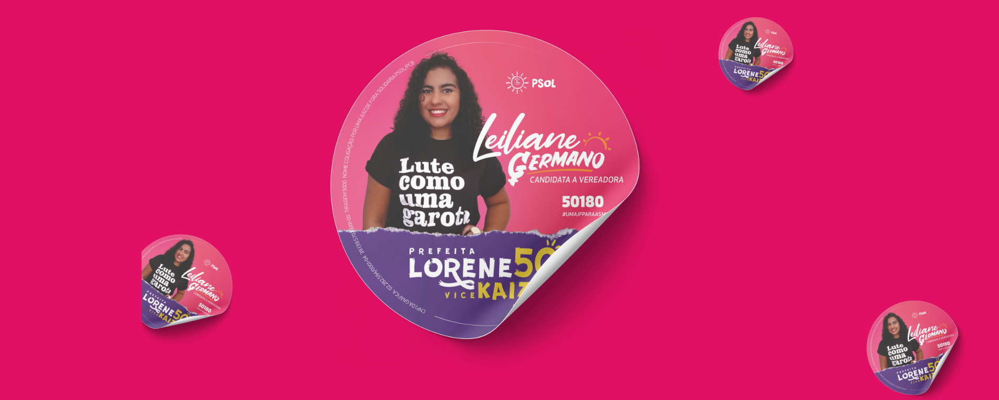
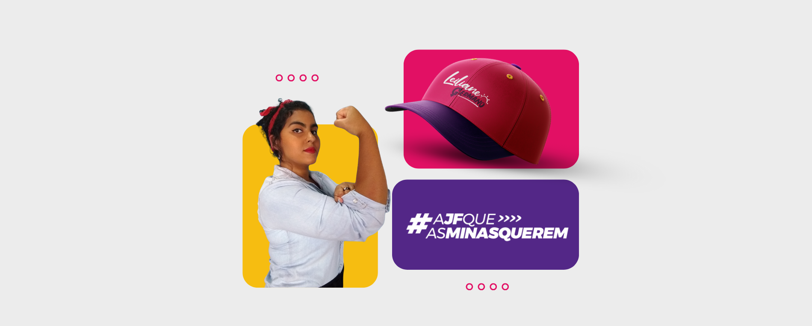
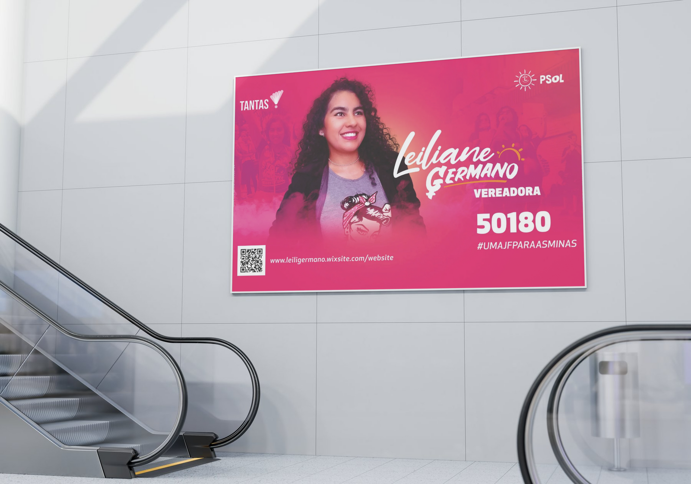
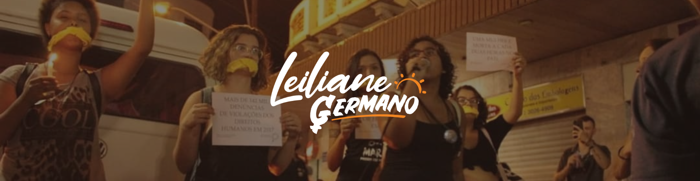
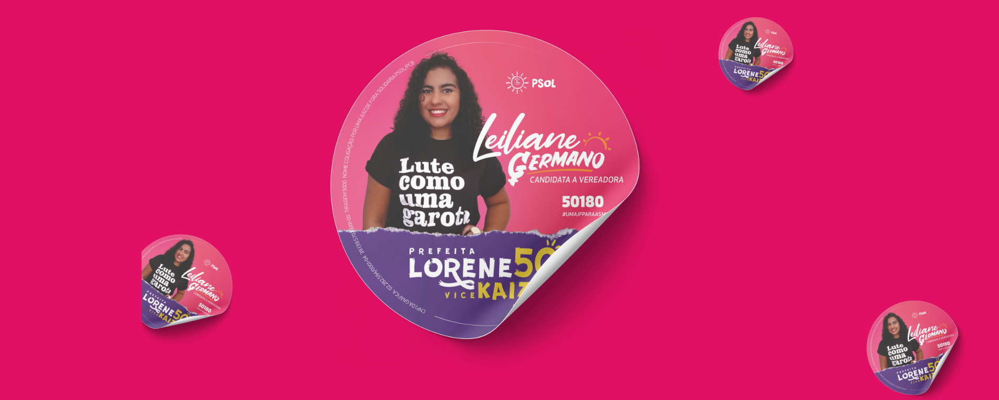
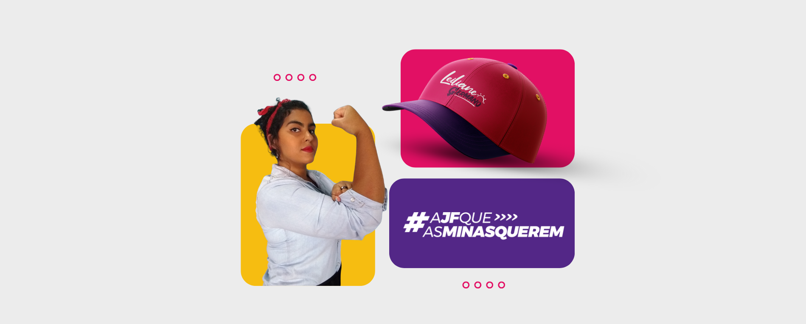
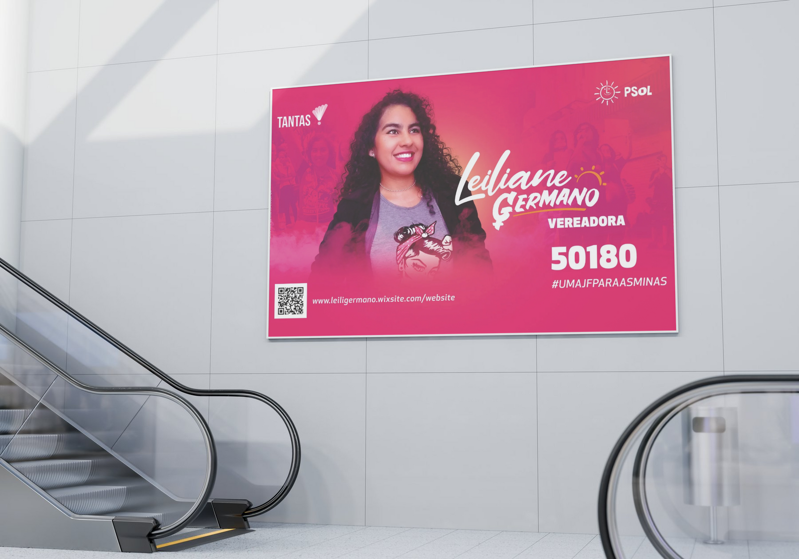

Leiliane Germano
Candidata à vereadora PSOL
Desenvolvi a identidade visual para a campanha eleitoral de Leiliane Germano, candidata a vereadora pelo
PSOL. A proposta foi criar uma comunicação vibrante, jovem e combativa, alinhada às pautas sociais e
feministas defendidas pela candidata. A identidade visual utiliza tons de rosa e roxo, contrastados com
branco e amarelo, criando um visual impactante e acessível.
O logotipo mistura tipografia manuscrita e sem serifa, transmitindo proximidade e força. Elementos
gráficos
como o sol e slogans de empoderamento fortalecem a narrativa visual da campanha. As aplicações foram
pensadas para materiais digitais, impressos, brindes e sinalização urbana, mantendo coesão e presença
marcante.
O projeto valoriza o protagonismo feminino e a representatividade, destacando Leiliane em peças
humanizadas e com forte apelo popular. A identidade entrega não só visibilidade, mas também cria
identificação emocional com o eleitorado jovem e engajado nas causas sociais.
 






